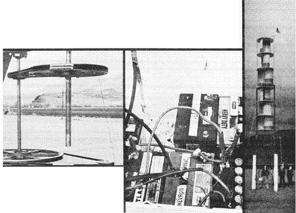

About a year and a half ago-when 35 students at Coburg Elementary School outside Eugene, Oregon decided that they wanted to learn more about wind energy-they also decided that they wouldn't be satisfied with simply reading a book on the subject.
Instead, the group of 5th and 6th graders-along with their teacher, Gary Raze-chose to build a 33-foot-tall, 500-watt-output Savonius rotor . . . a rotor which is now used to run nine 50-watt light bulbs inside their classroom.
The inspiration for the class project came back in the winter of 1975 when Gerald Ford-as part of his "Whip Inflation Now" program-urged all Americans to become more energy conscious. "We wanted to find a way to help save electricity," 6th grade student Debbie Lueck explains. "So when Mr. Raze found an idea in THE Mother Earth News (restricted) , Issue No. 26, for something called the Savonius rotor-and told us how it works-we all thought it'd be a great project for the class!"
Raze singled out the S-rotor design in particular because [1] such a windplant would-by virtue of its low speed of operation-require less precision in its construction and balancing than a conventional Stewart-type rotor, and [2] parts would be easy to find, meaning-in turn-that [3] the cost of the undertaking could be kept reasonably low.
The third point was vitally important, since-educational budgets being what they are these days-Raze knew the class could rely on no funding from the school district. Happily, businesses and parents around the Eugene area contributed nearly all the parts needed for the windplant . . . and the class was able-by making and selling hanging wooden candleholders after school-to raise enough money to purchase the few items that weren't donated.
Thus, it was possible for Gary Raze and his students to build their wind generator (or "WIN" generator, as the class likes to call it) over a three-month period at a cost of only $100!
How does the finished plant work? The entire system revolves (if you will) around a recycled 45-amp Dodge alternator which is driven-via belts and pulleys-at 18 times the rotational speed of the S-rotor itself. That is, when the three-story-tall WIN turbine turns at a modest 33 rpm-as it does in a 7- to 8-mph breeze-the alternator spins at some 600 rpm . . . and produces five amperes of electrical current. This "juice" can then be used either to [A] charge the system's six heavy-duty 12-volt car batteries, or [B] run nine 12-volt, 50-watt bulbs that Raze and his pupils have rigged to light their classroom.
In a strong wind-when the S-rotor turns at about 60 rpm-the alternator, spinning at more than 1,000 rpm, puts out a full 40 amps of 12-volt current. Which means that-if you multiply 40 X 12-the system is capable of delivering something like 480 watts of power . . . which ain't bad for a Savonius rotor assembled by grade school youngsters at a total cost of $100!
We salute you, Mr. Raze . . . and we salute the students who participated in the WIN generator project. More power to you!
|
 ABOVE: Pulleys and belts drive a 45-amp Dodge alternator. NEAR RIGHT: Thesystem's six heavy-duty car batteries were donated by a student's father. FAR RIGHT: The 500-watt WIN generator. |
|
|